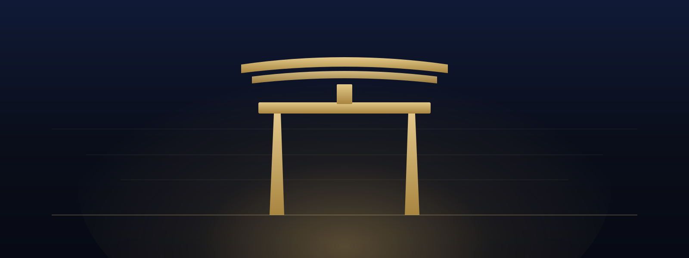
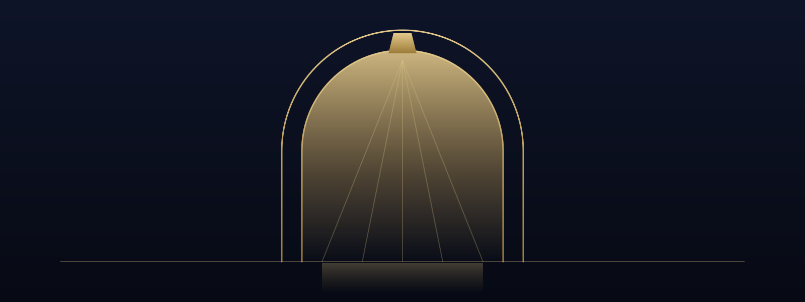
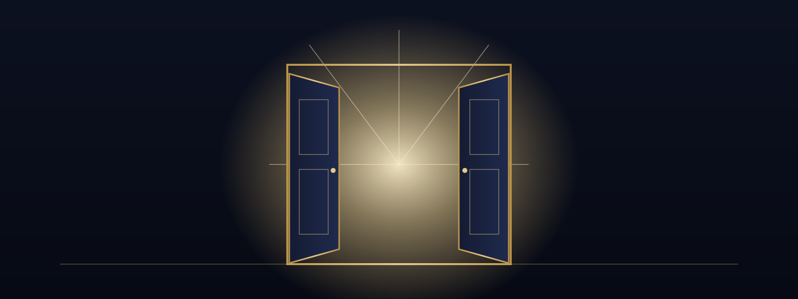
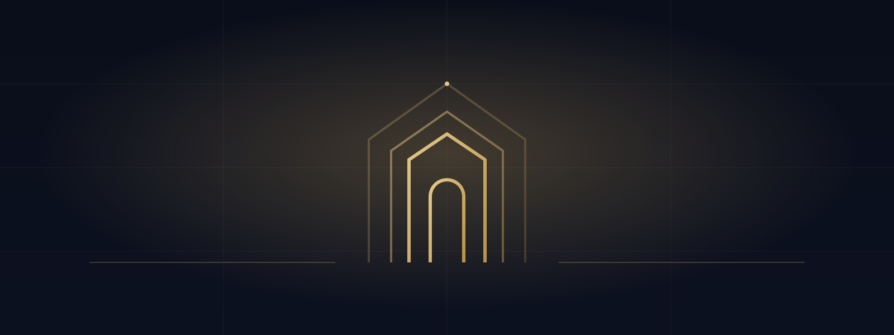
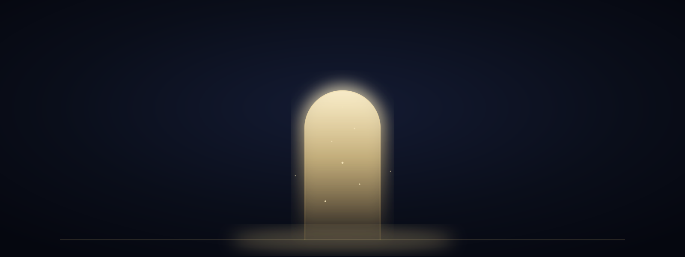

Header VisualsHPヘッダー画像 — 門（ゲート）をモチーフにした 5 パターン

日本的な「門」の象徴。ゴールドのシルエットと背後の光、霞のラインで格式と静謐さを表現。和のハイクラス感。

石造アーチの奥から差す光を細いゴールドラインで。西洋建築的な威厳と「門をくぐる」高揚感。

キャッチコピー「開ける扉。」を直接ビジュアル化。開いた扉の隙間から溢れる光でチャンスの解放を演出。

ロゴ／ファビコンのゲート意匠を大きく展開。同心アーチと罫線グリッドでミニマル・SaaS的な洗練。

抽象的に光り輝く縦型のポータルと舞い上がる粒子。フィンテック的で最も洗練されたモダン表現。